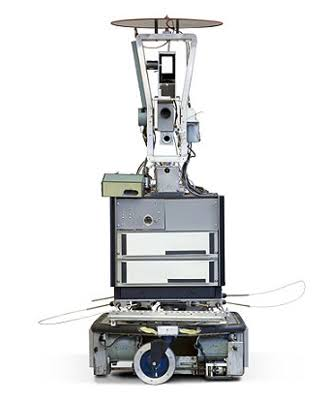

-
Historia sobre Robôs
A expressão "robô" foi utilizada pelo escritor Karel Paek , enquanto escrivia a sua peça, existe tambem contos que utilizam o significado de robô para especificar mais ainda asua Historia como a de hefesto, deus grego.Assim temos varias referencias sobre de onde veio realmente a criação de robos
-
Primeiro Robô Inteligente
A SRI International, foi a pioneira em construção de robôs inteligentes e moveis, criando o shakey em 1972, construido por Nilsson, este robo é controlado por tecnicas de inteligencias artificiais.
-
Webots
O webots é uma aplicação desktop que tem o objetivo de proporcionar simulações roboticas ou até mesmo você criar a sua propria simulação, foi a partir dessa aplicação que construimos o Boisu
Robô Boisu